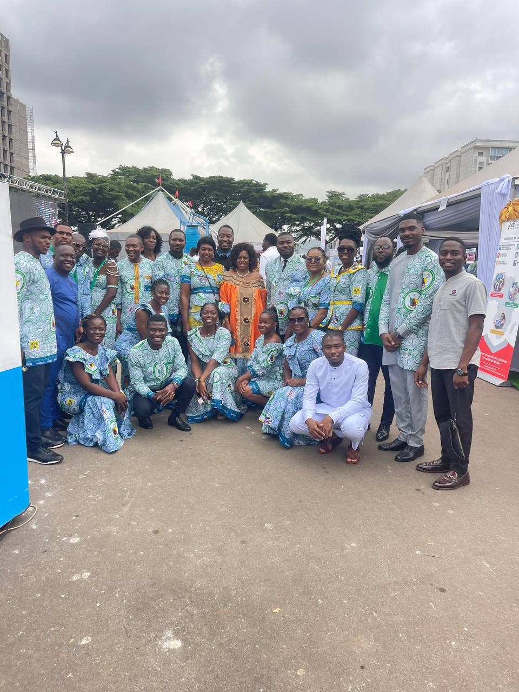

Ressources humaines
Le personnel du CNDT
Une équipe organisée par niveaux hiérarchiques, du Secrétariat Permanent aux Secrétariats techniques.
Annuaire interne
Effectif par niveau hiérarchique
Chaque ligne sépare un niveau hiérarchique. Cliquez sur une personne pour voir sa fiche.
Direction
1 personneSecrétariat Permanent
1 personne
Coordinations exécutives adjointes
3 personnesChefs de Secrétariat technique
5 personnes
ISAOURA Bénite
Chef — Secrétariat 01 · TIC & IA

BILOUNGA Marie Sandrine
Chef — Secrétariat 02 · Transformations industrielles

Dr TSUANYO David
Chef — Secrétariat 03 · Énergie, mines & environnement

TEMGOUA Pélagie
Chef — Secrétariat 04 · Biosciences

AMADA Brahim
Chef — Secrétariat 05 · Politiques S&T
Chefs adjoints
5 personnes


Membres des Secrétariats
4 personnesAucun résultat
Aucune personne ne correspond à votre recherche. Essayez un autre nom, une fonction ou un Secrétariat.